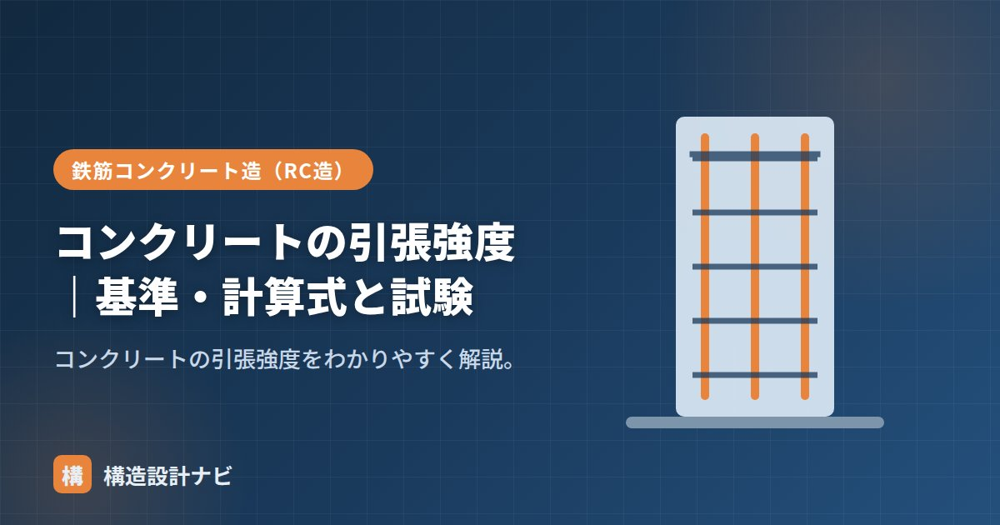

コンクリートの引張強度｜基準・計算式と試験

コンクリートの引張強度とは、コンクリートを引き伸ばす方向の力（引張力）に対してどこまで耐えられるかを示す強度です。コンクリートは圧縮に強い一方、引張には非常に弱い材料であり、この性質を理解しておくことは鉄筋コンクリート（RC）造の成り立ちを理解するうえで欠かせません。ここでは引張強度の目安、代表的な試験方法、計算式までまとめて整理します。
- コンクリートの引張強度は圧縮強度の約1/10程度しかない。
- 試験は割裂引張試験が一般的で、計算式で求められる。
- 引張に弱い分を鉄筋が負担することでRC造は成立している。
引張強度の目安
コンクリートの引張強度は、圧縮強度の約1/10（1/10〜1/13程度）しかありません。たとえば圧縮強度24N/mm²なら、引張強度は2〜2.4N/mm²程度です。このため引張・曲げのかかる部材では鉄筋が引張を負担します。
この比率は、コンクリートの調合や骨材の種類、養生条件によって多少変動しますが、おおむね「圧縮強度の1割前後」と覚えておけば実務上の感覚として困りません。設計基準強度が高くなるほど引張強度も上がりますが、比率自体は圧縮強度が高いほどやや小さくなる傾向があります。
なぜ引張に弱いのか
コンクリートはセメント・水・骨材が結合してできた材料で、内部に微細な空隙や骨材とセメントペーストの境界（界面）が無数に存在します。圧縮力がかかると材料全体が押し縮められて力を伝えやすいのに対し、引張力がかかるとこの微細な弱点部分にひび割れが集中しやすく、わずかな変形で破断に至ります。これがコンクリートが引張に弱い根本的な理由です。この弱点を補うために、引張力を負担できる鉄筋を組み合わせたのが鉄筋コンクリート造の基本的な考え方です。
引張強度試験
- 割裂引張試験：円柱供試体を横に寝かせて圧縮し、割れる力から引張強度を求める（最も一般的）。
- 曲げ強度試験：角柱供試体を曲げて求める（曲げ強度として）。
割裂引張試験は、円柱供試体を横倒しにして帯状に圧縮荷重をかけ、供試体が縦方向に割れる瞬間の荷重から引張強度を逆算する方法です。直接引張試験は供試体の端部を確実につかむことが難しく安定した結果が得にくいため、実務では割裂引張試験が広く採用されています。
割裂引張強度の計算式
たとえば直径d＝150mm、長さl＝300mmの円柱供試体を割裂試験にかけ、最大荷重P＝170kN（170,000N）で破壊したとします。この場合、σt＝2×170000÷（π×150×300）≒2.4N/mm²となり、圧縮強度が24N/mm²程度のコンクリートであれば、比率としても目安どおりの結果といえます。
引張強度は圧縮強度に比べてばらつきが大きく、構造計算では引張強度をそのまま部材の耐力として期待するのではなく、ひび割れの発生や曲げ・せん断に対する検討で参考値として扱うのが一般的です。主たる引張抵抗は鉄筋に負担させる設計とします。
よくある質問
Q1. 引張強度が低いとどんな問題が起きますか？
梁の下端や床スラブの引張側など、引張力が卓越する部分にコンクリートだけで抵抗させると、早期にひび割れが生じたり、脆性的な破壊につながる恐れがあります。そのため引張側には必ず鉄筋を配置します。
Q2. 引張強度は構造計算で直接使いますか？
曲げひび割れモーメントの算定やせん断強度の評価など、限定的な検討で用いられることはありますが、部材の主たる耐力計算では鉄筋の強度を基準に設計するのが一般的です。
割裂引張試験の値は圧縮試験に比べてばらつきが大きく出ることがあります。1本の結果だけで良し悪しを判断せず、複数本の平均や既往データとの比較で見る視点を若手には必ず伝えるようにしています。
「圧縮強度と引張強度の関係」「コンクリートと鉄筋の関係」「コンクリートの弱点」をどうぞ。
まとめ
- コンクリートの引張強度は圧縮強度の約1/10と非常に小さい。
- 試験は割裂引張試験が一般的。σt＝2P/(πdl)で求める。
- 内部の微細な弱点により、引張力に対して脆性的に破壊しやすい。
- 引張は鉄筋が負担する。だからRC造が成り立つ。